Ore formed at the Earth's surface
Sedimentary iron and manganese deposits are : they form at or near the Earth's surface. Exogenous deposits can be residual (laterites), detrital (placers) or chemical (evaporites, banded iron formations). Most iron and manganese ores began as chemical precipitates on the sea floor, later changed by weathering. Because they were deposited as beds, they can be continuous for kilometres. Iron and manganese (and bauxite) are bulk commodities: very large tonnages at high grade. The first iron ore mined in Australia was a laterite near Mittagong, formed by deep weathering of Hawkesbury Sandstone. slide 3 lecture recording, 9 Nov
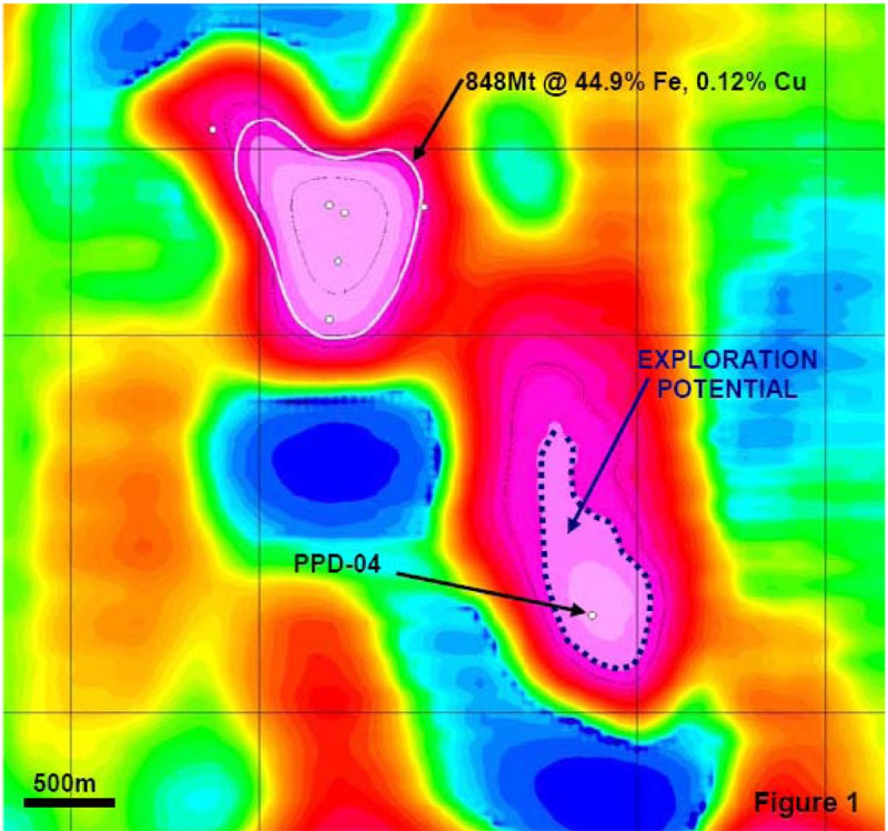
Two strong highs (pink) stand out. Why does iron ore show up so well on a gravity map, and what does the second high suggest?
Show what I see
- One strong high outlined as a known deposit (848 Mt at 44.9% Fe).
- A second, almost identical high to the south-east marked "exploration potential".
Hematite and magnetite are much denser than quartz, so iron ore makes big gravity highs (and magnetic highs). The second high probably holds another deposit of similar size and grade. slide 2 lecture recording, 9 Nov
Manganese deposits
Manganese ore is easy to recognise in the field: it is black and sooty, and if you work in a manganese mine you get covered in it. The main ore mineral is (MnO₂). There are several styles: carbonates and silicates with andesitic and basaltic volcanics; MnO₂ or MnCO₃ with BIFs (platform type); Mn-rich graphites or carbonaceous shales; and, the most important for large deposits, sedimentary shelf deposits in estuarine or shallow marine settings. slide 4 lecture recording, 9 Nov
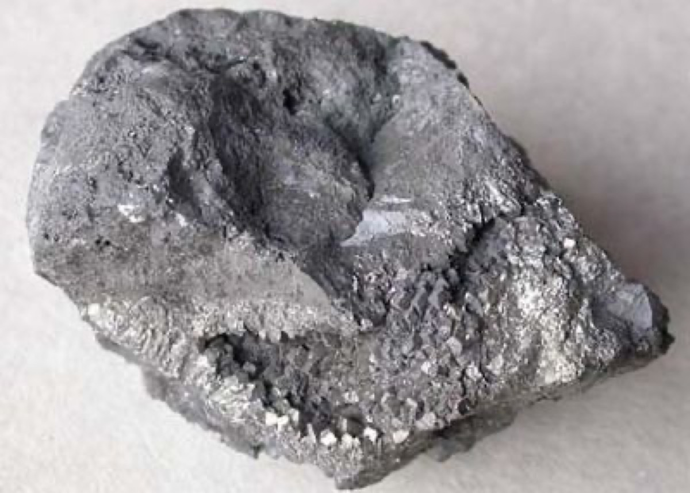
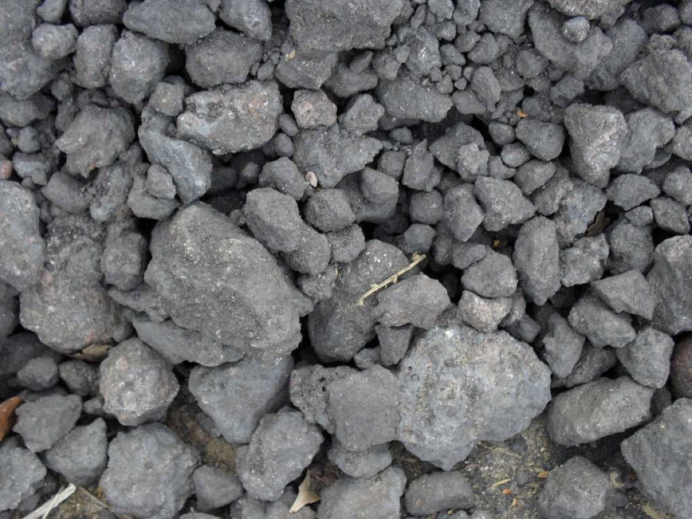
Sedimentary Mn deposits form on stable craton margins or in cratonic basins, in shallow marine to estuarine shelf settings, of many ages, during changes in sea level. The key is an anoxic basin starved of detrital input. slide 5 lecture recording, 9 Nov
Who mines manganese (2025)
Thousand tonnes, slide 7. South Africa holds about 70% of world resources.
How manganese ore forms
The basin is stratified: oxygenated (oxic) water on top and oxygen-poor (anoxic) water below. Mn²⁺ is soluble in the anoxic water. During a marine transgression, organic-rich runoff and nutrient upwelling bring the deep water onto the shelf. Where the oxic-anoxic boundary meets the shelf, Mn²⁺ oxidises to Mn⁴⁺ and MnO₂ precipitates. Mn oxides form on the shallow, landward side (oxide facies), and Mn carbonates form in deeper, more reduced water basinward (carbonate facies). Over time, carbonates can change to oxides. The site must be protected from clastic sediment, which would dilute the ore and change the chemistry. slides 8 and 15 lecture recording, 9 Nov
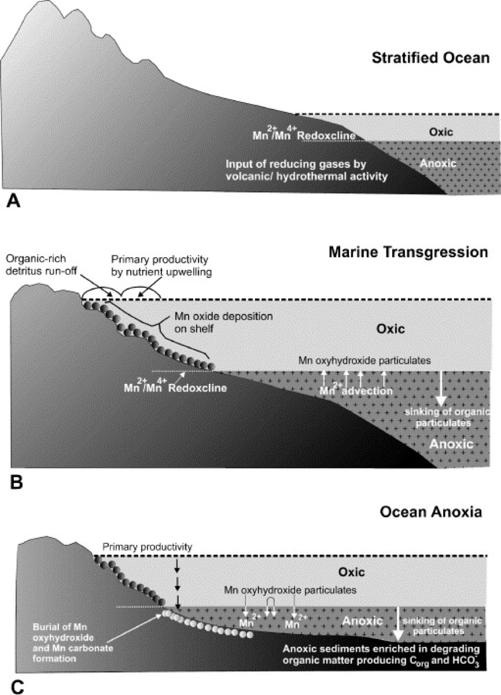
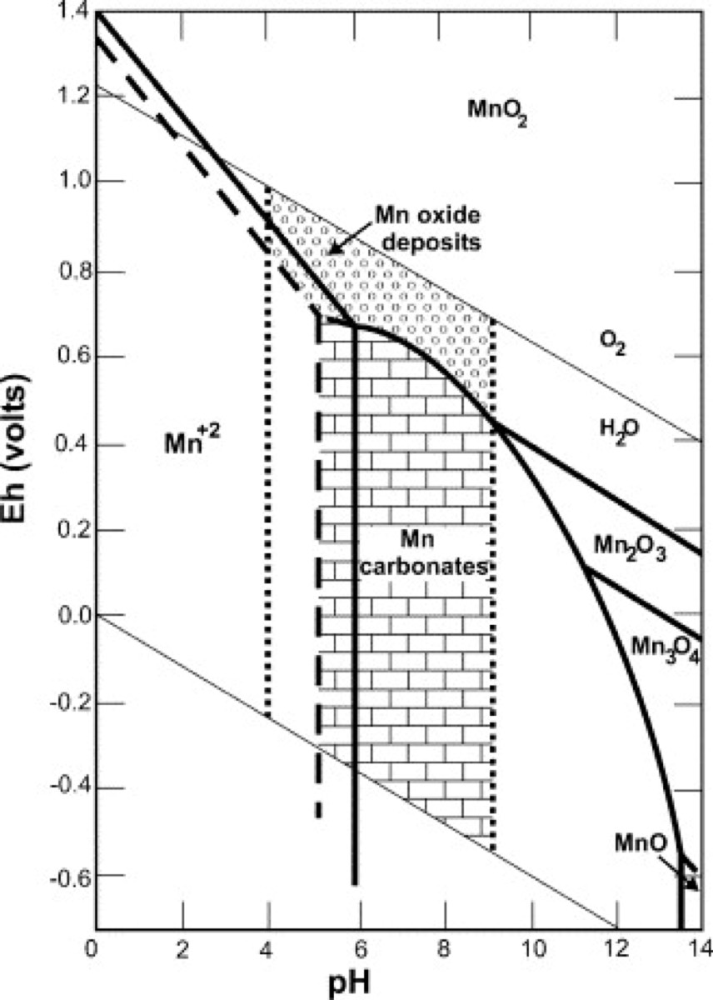
The pH range is similar for both (about 4 to 9). What separates them is the redox potential (Eh): manganese oxides need a high, restricted Eh. On the Eh-pH diagram for iron, hematite has a large field, and Mn oxides are stable in the same field, which is why Mn oxides are common in iron ore deposits too. slides 8 and 30 lecture recording, 9 Nov
- Mn²⁺ dissolves in anoxic water; it precipitates as MnO₂ where it meets oxygen.
- Ore control: the oxic-anoxic interface meeting shelf sediments, in a site protected from clastics.
- Landward oxide facies (pyrolusite); basinward carbonate facies (rhodochrosite).
- Supergene enrichment can raise the grade two to three times.
Groote Eylandt, Northern Territory
Almost all of Australia's manganese comes from one island in the Gulf of Carpentaria. Groote Eylandt has about 250 Mt of ore and supplies about 15% of world production. The ore zone covers 22 by 6 km. Beds are 0.1 to 11 m thick, thin to the west, and dip only about 3°, so they are easy to open cut, like a coal seam. Grades are 30 to 50% Mn (pure MnO₂ is 63% Mn). The minerals are pyrolusite, (a field name for a mixture of Mn oxides), cryptomelane (KMn₈O₁₆) and manganocalcite (pale pink; a deep pink carbonate is more likely rhodochrosite). slide 9 lecture recording, 9 Nov
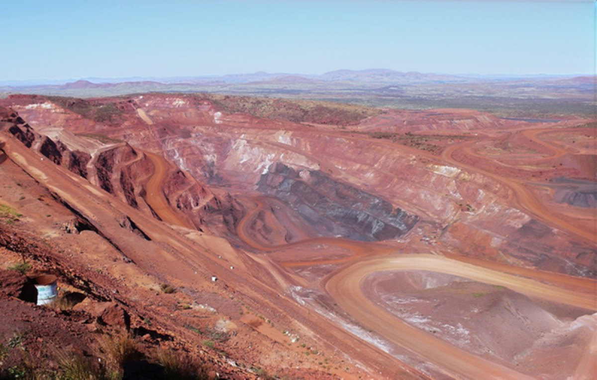
The ore is flat-lying. Which layers would you mine, and how would you follow them?
Show what I see
- Flat, gently dipping layers in a broad, shallow pit: red and brown sand and clay above, darker layers below.
The dark, black Mn oxide layer is the ore; it is easy to pick because it is black. The miners strip the cover, take the ore layer, then move along, like mining a coal seam. Processing removes the clay (in settling tanks) and the quartz. slides 9 and 10 lecture recording, 9 Nov
The ore formed in a Cretaceous intracratonic sea (Carpentaria, Eromanga, Surat basins) along a palaeo-shoreline: Mn oxide ore landward and Mn carbonate seaward. The section is Middle Proterozoic quartzite, an unconformity, Lower Cretaceous quartz sand, then Lower to Middle Cretaceous clays with oolitic and Mn ore, then soils. The richest ore is pisolitic. The ore shows sedimentary structures: oolites (less than 2 mm) and pisolites, sorting, grading, ripple marks and cross-bedding. Each pisolite grew in layers around a small particle in shallow water. slides 11 and 12 lecture recording, 9 Nov
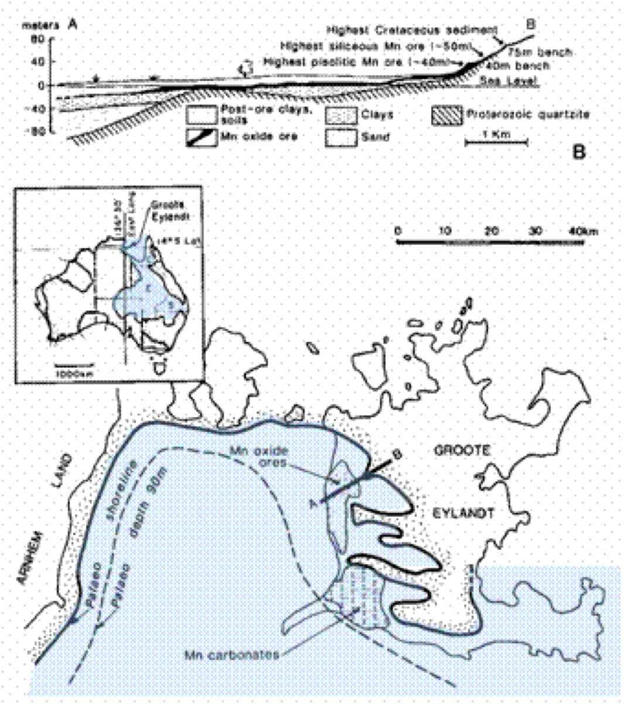
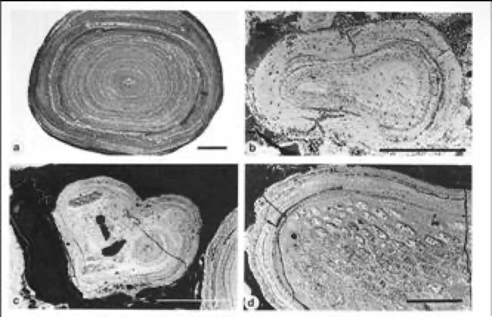
Describe the grains. How did they grow?
Show what I see
- Round to oval grains with many thin concentric layers, some with a broken core that was coated again.
These are Mn pisolites. Each grew layer by layer around a nucleus, rolling in shallow, agitated water. Broken pisolites that were coated again show reworking. They are the highest-grade ore at Groote. slide 12 lecture recording, 9 Nov
Later supergene weathering in a seasonal (monsoonal) climate moved manganese again. MnO₂ is normally insoluble, but Fe²⁺ can dissolve it; it then precipitates again through oxidised surface water, evaporation, microorganisms and a rise in pH. High-grade Mn ore outcrops as black rubble, as at Brumby Creek. slides 13 and 14 lecture recording, 9 Nov
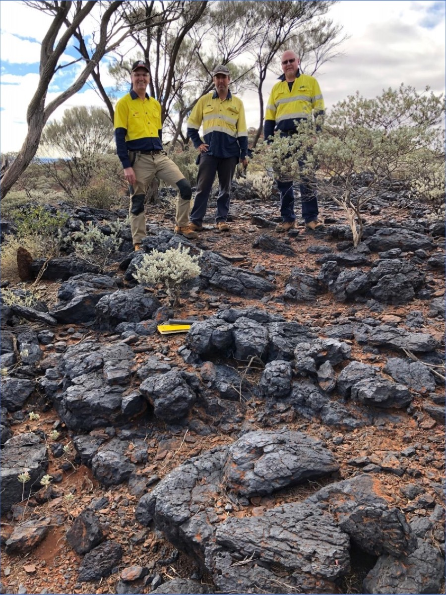
- Mn oxide ore: black, sooty, soils your fingers; pyrolusite (MnO₂) and "psilomelane" (mixed oxides, often botryoidal).
- Pisolitic and oolitic textures point to sedimentary Mn.
- Pink carbonate: pale = manganocalcite, deep pink = rhodochrosite.
Deep-sea manganese nodules
Mn-Fe nodules cover parts of the deep ocean floor (deeper than 3000 m) in stable ocean basins, mostly in the Pacific (such as the Clarion-Clipperton zone). They are recent, with pisoid textures and almost no gangue. But they contain only about 15 to 19% Mn, often with as much or more iron, and only about 0.3% Co. A land deposit needs at least about 40% Mn. Proving the grade and tonnage of nodules scattered on the sea floor is very hard. The lecturer thinks the interest is mostly hype, except for countries such as Japan that have no manganese or cobalt of their own. Black smokers also deposit Mn and Fe oxides (see Lecture 6). slides 16 to 19 lecture recording, 9 Nov
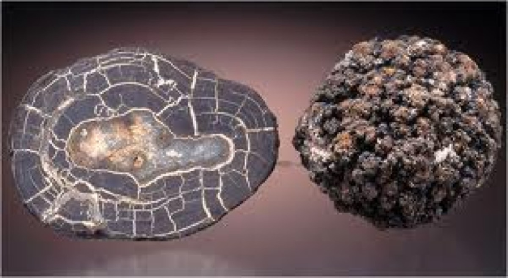
Iron ore types and the market
Sedimentary iron ore forms by low-temperature movement of Fe²⁺ in water with low pH and low Eh (no oxygen): banded iron formations (BIF) and ironstones. Other types are volcanic-associated ores, bog iron ores (iron taken up by peat), high-temperature magmatic ores (Kiruna, Sweden) and hydrothermal skarns. By volume, BIF-hosted ore dominates the world market. slide 20 lecture recording, 9 Nov
Who mines iron ore (2025)
Production in million tonnes and reserves in million tonnes, slide 22.
Iron ore is Australia's most valuable export. BHP and Rio Tinto mine most of it. Their total cost is about US$24 to 30 per tonne, and the price is about US$100 per tonne, so the profit is very large. Lang Hancock first claimed many Pilbara deposits in the 1960s; his daughter, Gina Rinehart, is now the richest person in Australia. slides 22 and 23 lecture recording, 9 Nov
Banded iron formations
BIFs are tied to the history of oxygen on Earth. Most formed between about 2.8 and 2 Ga (the traditional range for the main BIFs is 2500 to 1900 Ma). They became common when stromatolites became common: photosynthesis by bacteria began to release oxygen. The early atmosphere was mostly CO₂ and had no oxygen. Big changes, such as crust formation and glaciations, came at the same times as BIF formation. After the Great Oxidation Event (about 2.4 Ga), oxidised minerals such as saléeite could form, and molybdenum in black shales rose as oxygen increased. slides 24 to 26 lecture recording, 9 Nov
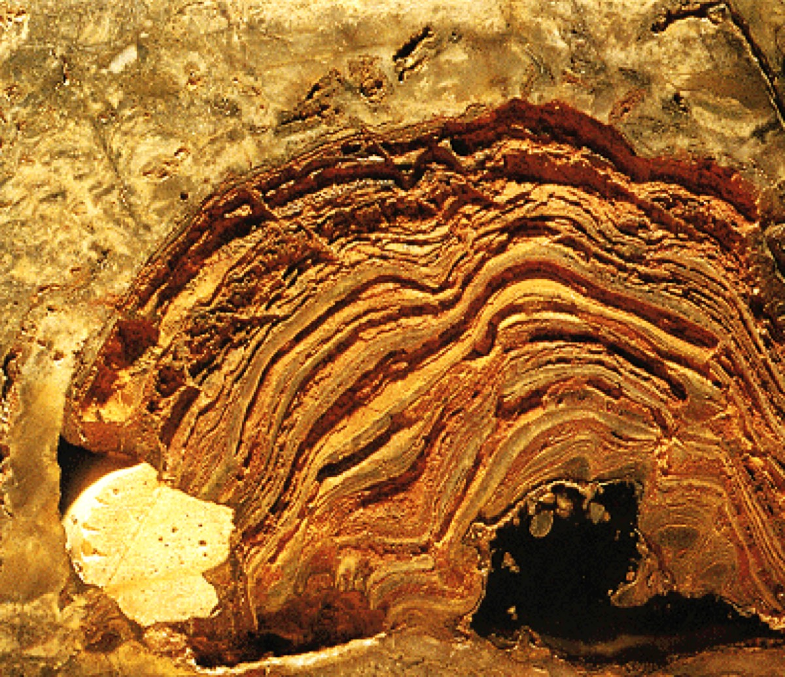
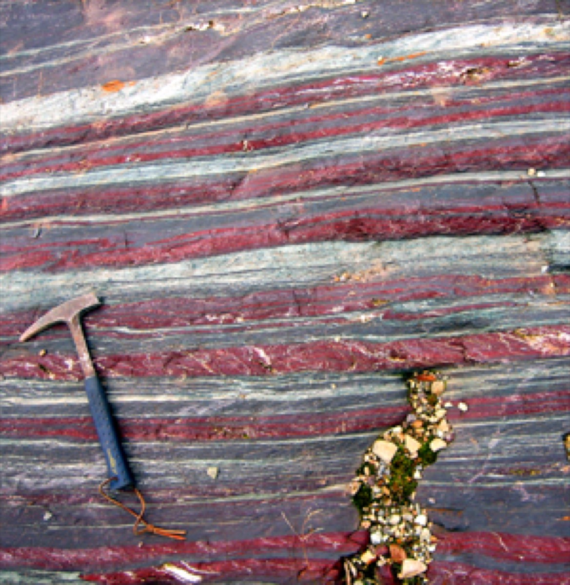
How BIF forms: in reducing water, iron dissolves as Fe²⁺. When it meets oxygen, it precipitates as Fe³⁺, as very insoluble hematite (Fe₂O₃). In the Archean, volcanic exhalations put large amounts of Fe, silica and sulphide into the oceans. With no oxygen, dissolved iron travelled far before it was deposited; the lecturer said the oceans may even have been orange. The sediments were Fe-cherts, carbonates and sulphides; their oxidation formed BIFs. The facies depend on water depth: oxide (Fe₂O₃) in shallow water, carbonate (FeCO₃) deeper, and sulphide (FeS₂) deepest. BIFs mostly formed in shallow water. slides 28 and 29 lecture recording, 9 Nov
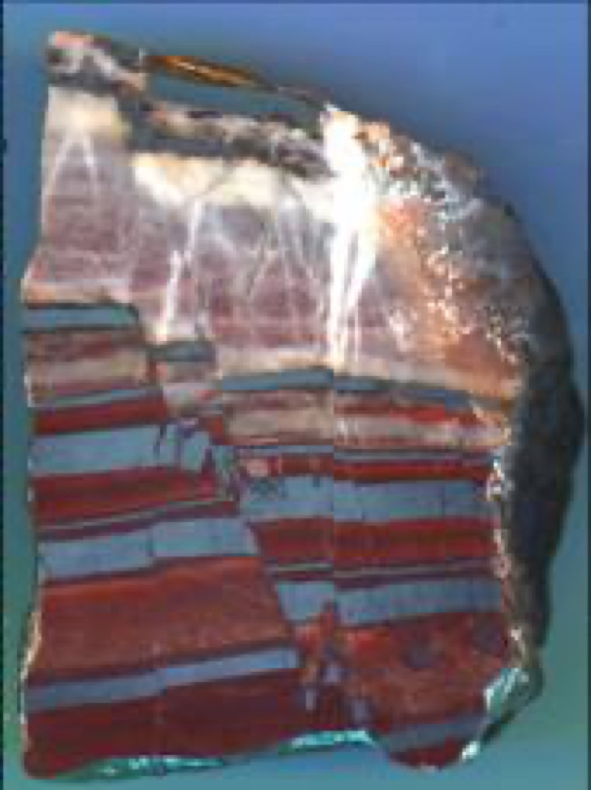
Compare the top and the bottom of this slab. Which part is a classic BIF?
Show what I see
- Top: hematite-stained fine-grained silica, without clear bands.
- Bottom: sharp alternating bands of red jasper or chert and grey-blue metallic hematite.
The bottom is a classic banded iron formation: alternating Fe-rich and silica-rich layers. The top is a "proto-BIF", hematite impregnated into fine-grained silica. Both are sedimentary in origin. slide 1 lecture recording, 9 Nov
The main BIF provinces are the Hamersley (Australia), Krivoy Rog (Ukraine), Ishpeming (Michigan, USA) and Carajás (Brazil). Many BIF terrains also host gold deposits, such as Homestake, Morro Velho, Mt Magnet and Kolar (slide 27); BIF is one of the host rocks of orogenic gold (Lecture 13). BIFs are often linked with greenstone belts and can be more than 300 m thick. Main minerals: hematite, goethite, silica, pyrite, siderite and magnetite. slides 27 and 31 lecture recording, 9 Nov
From BIF to ore
Primary BIF is not rich enough. Groundwater and weathering leach out the silica, carbonate and clay and leave the insoluble iron oxides behind. This is supergene enrichment. Deeper fluids during burial and deformation (hot saline basin fluids, then cooler meteoric water) can also start the enrichment. slides 29 and 31 lecture recording, 9 Nov
| Ore type | Fe (wt%) |
|---|---|
| Fe-rich primary BIF | 30 to 45 |
| Goethite-rich ore | 56 to 63 |
| High-grade hematite ore (massive or microplaty) | 60 to 68 |
| Pure hematite | 70 |
slides 32 and 40
Weather a BIF three ways0 / 3 tried
Pick what the fluid does to the BIF.
The three outcomes are from slide 42. The grade numbers are invented for teaching.
Goethite-rich ores formed mostly by supergene enrichment from the Cretaceous to the Cenozoic, mostly in palaeovalleys and other depressions (the "channel iron" deposits). Faults and folds act as pathways for water that dissolves quartz and carbonate and replaces them with goethite. So you must understand the structure to find the supergene ore. slide 44 lecture recording, 9 Nov
The Pilbara (Hamersley Province)
The Pilbara has more than 25 000 Mt of reserves at about 60% Fe, at mines such as Robe River, Mt Tom Price, Paraburdoo, Newman and Yandi. The host rocks are 2.5 to 2.2 Ga shallow-water chemical and detrital shelf sediments (BIF, carbonate, shale) with mafic and felsic volcanics, in a quiet continental margin basin. There were three deformations (about 2.4, 2.2 and 1.7 Ga). The region was also deeply weathered in the Mesozoic and Tertiary. The ore minerals are hematite, goethite, magnetite and (hematite replacing magnetite: it looks like magnetite octahedra but is not magnetic). The gangue is quartz, calcite and kaolinite. slides 33 and 38 lecture recording, 9 Nov
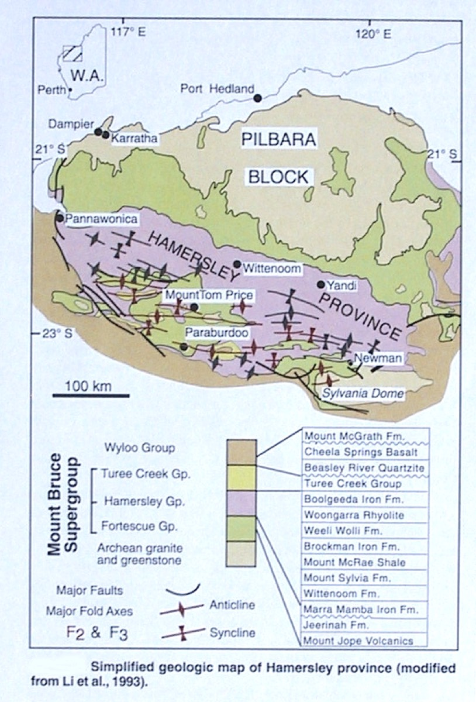
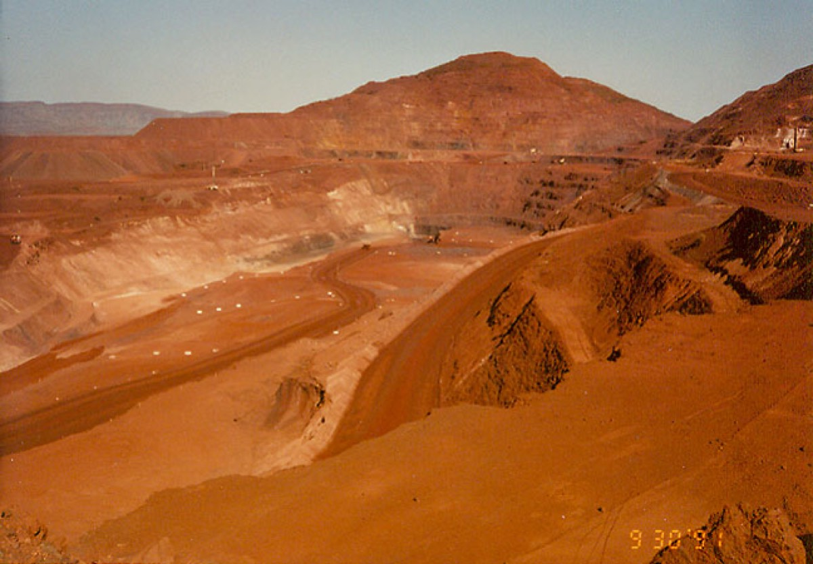
The bigger, better ore bodies tend to be in the more deformed southern areas, because deformation made weaknesses that let weathering go deeper. Ore bodies are gently dipping sheets near the surface (less than 500 m deep), roughly parallel to the land surface, and linked to faults and folds. They are mostly microplaty hematite at 58 to 64% Fe, plus goethite-rich pisolitic channel deposits. Later dolerite dykes cut the ore and must be mined around. At Mt Whaleback, the richest ore is often in the lower part of a fault block, because the fault let weathering fluids in. slides 39 to 43 lecture recording, 9 Nov
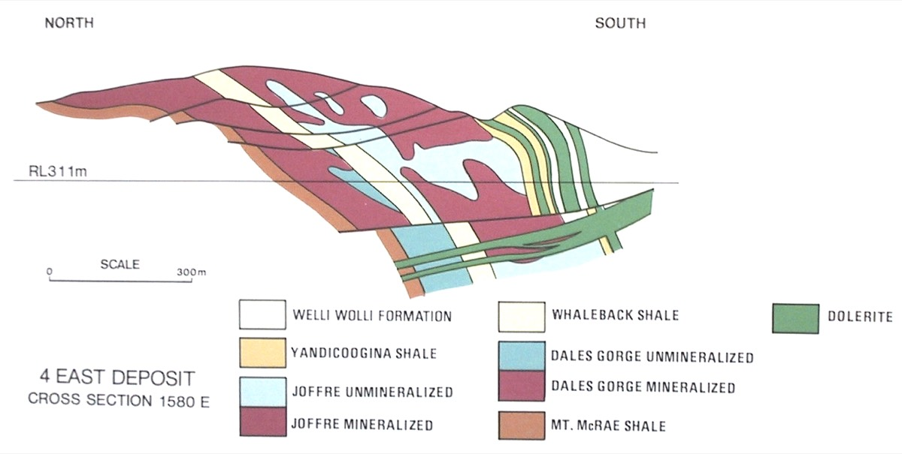
Find the mineralised layers and the dolerite. How has the structure affected the ore?
Show what I see
- Folded and faulted layers; some units marked mineralised, the same units elsewhere unmineralised.
- A green dolerite dyke cutting across the ore.
The ore follows particular BIF units (such as the Joffre and Dales Gorge members) where folding and faulting helped fluids enrich them. The dolerite dyke is barren and dilutes the ore, so it has to be mined around. slide 41 lecture recording, 9 Nov
New ages and new rivals
Hematite can now be dated directly by U-Pb, because small amounts of uranium replace iron in its structure. Courtney-Davies et al. (2022, 2024; Curtin University and CSIRO) dated the Pilbara ore hematite. The traditional view was that the ore formed at 2.2 to 2 Ga. The new ages are much younger, 1.4 to 1.1 Ga, linked to the amalgamation of Australia after the break-up of the supercontinent Columbia (Nuna). The BIF itself still formed at 2.2 to 2 Ga, during the Great Oxidation Event. slide 45 lecture recording, 9 Nov
Simandou, in Guinea, West Africa, is a joint venture between Rio Tinto and China that could threaten Australia's dominance. Its hills are almost solid hematite. It has been known for a long time, but it needed a railway across Guinea and a new port. Rain, distance and politics are all problems; its advantage is that it is close to Europe and the USA. slides 46 to 48 lecture recording, 9 Nov
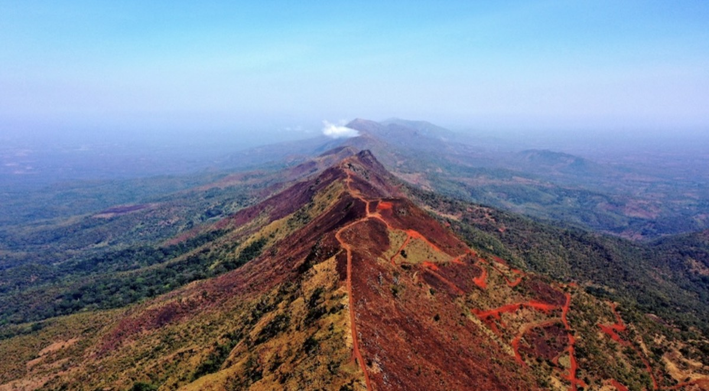
Putting it together
Name the rock0 / 5
- Mn: stratified basin, Mn²⁺ in anoxic water, MnO₂ where it meets oxygen on the shelf; Groote Eylandt (Cretaceous, ~15% of world supply, 30 to 50% Mn, pisolitic ore).
- South Africa leads Mn production (~70% of resources); Australia has the largest reserves.
- BIF: Fe²⁺ dissolved in an O₂-poor ocean, precipitated as Fe³⁺ oxide; 2.5 to 1.9 Ga; oxide, carbonate, sulphide facies with depth.
- Supergene leaching of silica and carbonate turns 30 to 45% Fe BIF into 60 to 68% Fe ore.
- Pilbara: > 25 000 Mt at ~60% Fe; ore hematite dated 1.4 to 1.1 Ga.
Classify the deposit0 / 6
Self-test
Answer each question out loud or on paper before you open it. If your answer was right, claim the ounces.
Glossary and flashcards
These are terms that the lecture expects you to know, or only explains briefly. Tap a dotted word in the text to see its meaning.
Flashcards
Where this goes next
Middleback Ranges, one of the lab ore suites, is a BIF iron deposit: use this lecture for it. Compare supergene enrichment here with the oxide zones of Lecture 2 and the laterites of Lecture 8. The BIF-hosted gold link connects to Lecture 13.